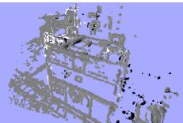
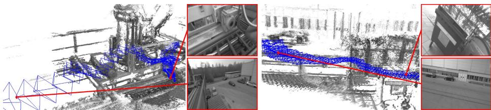

「The explicitly scale-drift aware formulation allows the approach to operate on challenging sequences including large variations in scene scale. Major enablers are two key novelties: (1) a novel direct tracking method which operates on sim(3), thereby explicitly detecting scale-drift, and (2) an elegant probabilistic solution to include the effect of noisy depth values into tracking.」
两个新颖点正好对应两个痛点：(1) 在 sim(3) 上做跟踪，显式检测尺度漂移；(2) 把深度噪声以概率方式并入跟踪。下面依次拆开。先说为什么它能跑在 CPU 上——答案是「半稠密」。
「when using keypoints, information contained in straight or curved edges – which especially in man-made environments make up a large part of the image – is discarded.」
那么「半稠密」具体怎么取甜点？原文的地图表示说得很清楚：每个关键帧的逆深度图 $D_i$ 和方差图 $V_i$ 「are only defined for a subset of pixels $\Omega_{D_i}\subset\Omega_i$, containing all image regions in the vicinity of sufficiently large intensity gradient, hence semi-dense」。也就是说：
关键操作原文写得很直白（§3.5）：「The depth map of each created keyframe is scaled such that the mean inverse depth is one. In return, edges between keyframes are estimated as elements of sim(3), elegantly incorporating the scaling difference between keyframes, and, in particular for large loop-closures, allowing an explicit detection of accumulated scale-drift.」
原文自己点明为什么要这么分（§3.3）：「the proposed formulation explicitly takes into account varying noise on the depth estimates: This is of particular relevance as for direct, monocular SLAM, this noise differs significantly for different pixels, depending on how long they were visible」。即：单目直接法里，每个像素的深度噪声差别很大（取决于它被看到了多久），把这项显式写进权重，跟踪才不会被不可靠的深度带偏。
原图注（Fig. 1）：LSD-SLAM generates a consistent global map, using direct image alignment and probabilistic, semi-dense depth maps instead of keypoints. Top: Accumulated pointclouds of all keyframes of a medium-sized trajectory. Bottom: A selection of keyframes with color-coded semi-dense inverse depth map.（LSD-SLAM 用直接图像对齐与概率半稠密深度图（而非关键点）生成一致的全局地图；上为中等轨迹所有关键帧累积点云，下为若干关键帧的彩色半稠密逆深度图。） 怎么看这张图：① 上半是整条轨迹累积出的半稠密点云（只在高梯度处有点）；② 下半用颜色编码每个关键帧的逆深度；③ 这就是「不用特征点也能建出大尺度一致地图」的总览。

原图注（Fig. 5）：Direct keyframe alignment on sim(3): (a)-(c): two keyframes with associated depth and depth variance. (d)-(f): photometric residual, depth residual and Huber weights, before minimization (left), and after minimization (right).（sim(3) 上的直接关键帧对齐：(a)-(c) 两个关键帧及其深度与深度方差；(d)-(f) 光度残差、深度残差、Huber 权重，最小化前（左）与后（右）。） 怎么看这张图：① (a)(b)(c) 展示两帧的深度图与方差图（半稠密，只在边缘有值）；② (d)(e)(f) 左是优化前的残差/权重，右是优化后——残差明显变小、Huber 权重更集中；③ 这正对应第 3、4 节的 sim(3) 配准 + 方差归一化残差。

原图注（Fig. 6）：Two scenes with high scale variation. Camera frustums are displayed for each keyframe with their size corresponding to the keyframe's scale.（两个尺度变化很大的场景；每个关键帧画出相机视锥，其大小对应该关键帧的尺度。） 怎么看这张图：① 视锥大小不一，正说明各关键帧尺度 $s$ 不同；② 这正是 sim(3) 把尺度当变量后能看到的现象；③ 配合回环修正，大尺度变化下的地图仍能保持一致。
6. 速度与规模：它到底跑得多大
原文明确说它 「runs in real-time on a CPU」，甚至 「as odometry even on a modern smartphone [22]」——这就是半稠密砍算力的回报。规模上，它演示了超过 500 m、约 6 分钟的挑战性轨迹（Fig. 7），并能在同一序列里从平均逆深度小于 20 cm 到大于 10 m 的大尺度变化下工作。